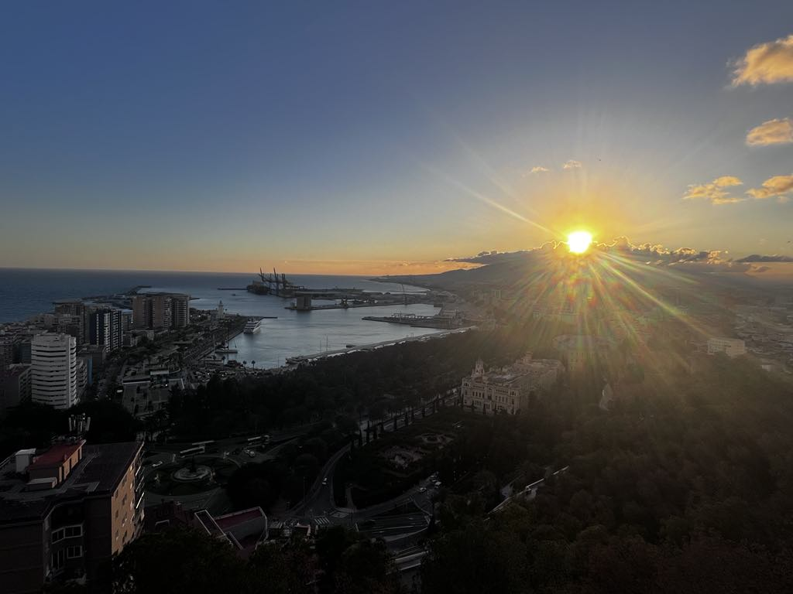

Start your visit at the Alcazaba, an ancient Moorish fortress with great views.
Don't miss the Picasso Museum – Malaga is his birthplace!
For beach lovers, La Malagueta is a must. Swim, sunbathe or enjoy seafood at a chiringuito.


Walk along Muelle Uno – a modern port area full of shops and cafes.
Climb up to Gibralfaro Castle for a stunning panorama of the city and coast.
Whether you're here for culture, beaches or food – Malaga won’t disappoint.